الغشاء الخلوي (Cell Membrane) هو الجدار الحارس للخلية، مسؤوليته الحفاظ على حياتها بالتحكم في دخول وخروج المواد بين السيتوبلازم والسائل الخارجي (ECF ).
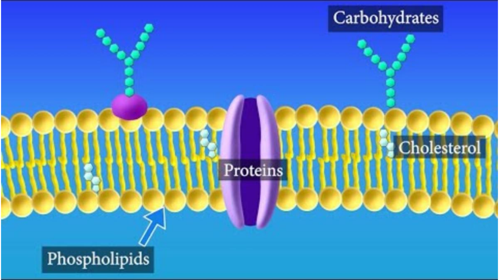
يتكون الغشاء من 4 مكونات رئيسية ظاهرة بالرسمة:
تشكل الهيكل الأساسي للغشاء (Lipid Bilayer)، تمنع مرور المواد الذائبة في الماء وتسمح فقط بمرور المواد الذائبة في الدهون والغازات.
تعمل كبوابات وقنوات (Channels) ومضخات وحوامل لنقل الأيونات والجلوكوز التي لا تستطيع عبور الدهون.
يستقر بين ذيول الدهون، وظيفته الحفاظ على مرونة وسيولة الغشاء (Fluidity) ومنعه من التجمد أو التفكك.
سلاسل سكرية متصلة بالبروتينات أو الدهون على السطح الخارجي للتعرف الخلوي والمناعي (Cell recognition).
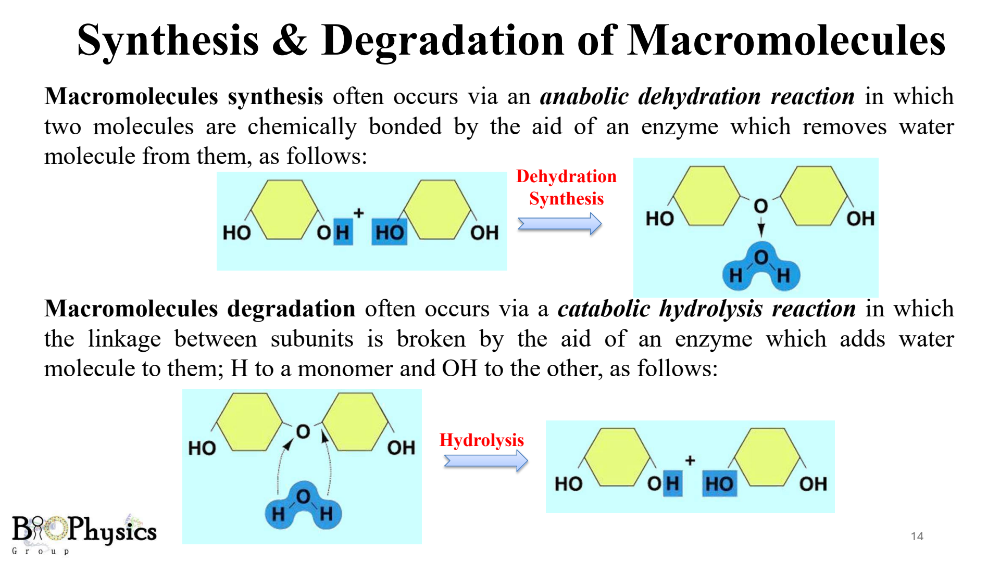
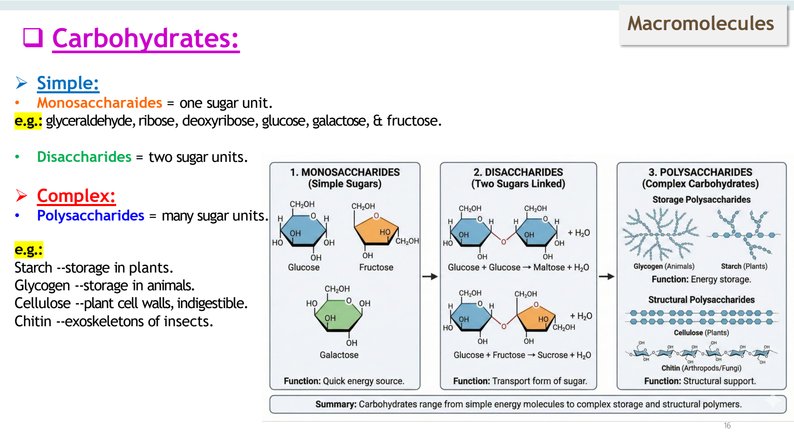
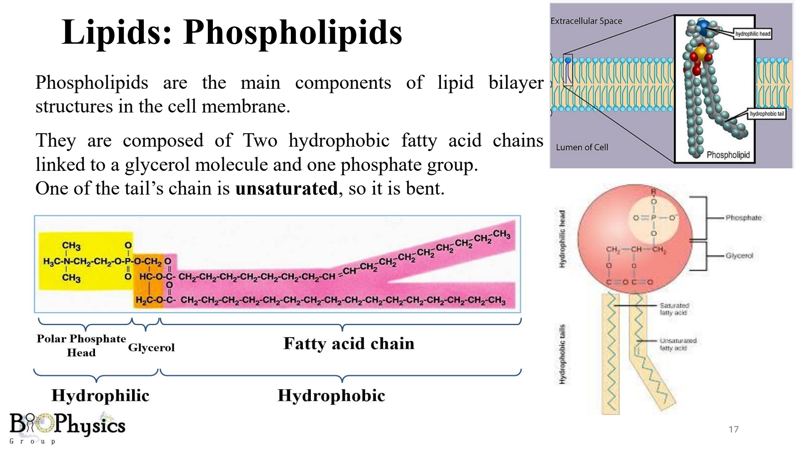
أحد ذيلي الفوسفوليبيد غير مشبع (Unsaturated) ويحتوي على انحناء (Bent tail) يمنع التصاق وتجمد الدهون، وهو السر الفيزيائي الذي يبقي غشاء الخلية مرناً وسائلاً في درجات حرارة الجسم!
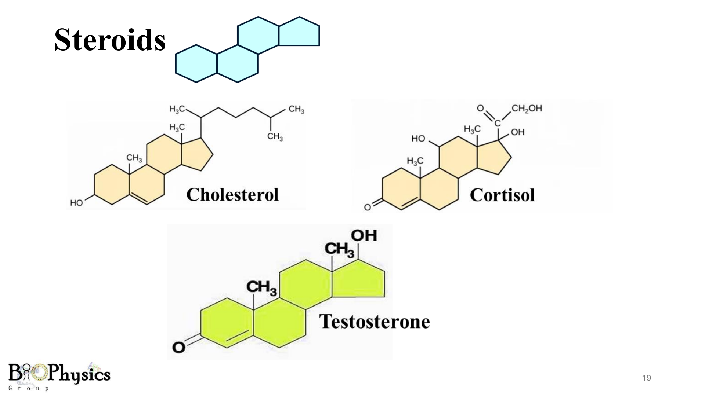
الستيرويدات دهون مميزة لا تحتوي على أحماض دهنية، بل تتكون من 4 حلقات كربونية. الكوليسترول (Cholesterol) موجود في خلايا الحيوان والإنسان فقط (غير موجود بالنباتات)، وهو المادة الخام لتصنيع هرمونات الجسم المنظمة (كورتيزول، تستوستيرون).
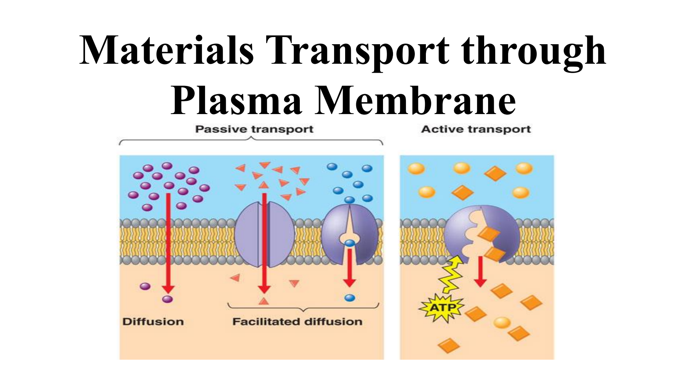
• مع تدرج التركيز: من التركيز العالي إلى المنخفض (Down concentration gradient).
• لا يحتاج إلى طاقة (NO ATP needed)، تتحرك الجزيئات بطاقتها الحركية الذاتية (Kinetic Energy).
• ضد تدرج التركيز: من التركيز المنخفض إلى العالي (Against concentration gradient).
• يستهلك طاقة الخلية (Consumes ATP) ويحتاج بالضرورة لمضخات أو بروتينات حاملة.
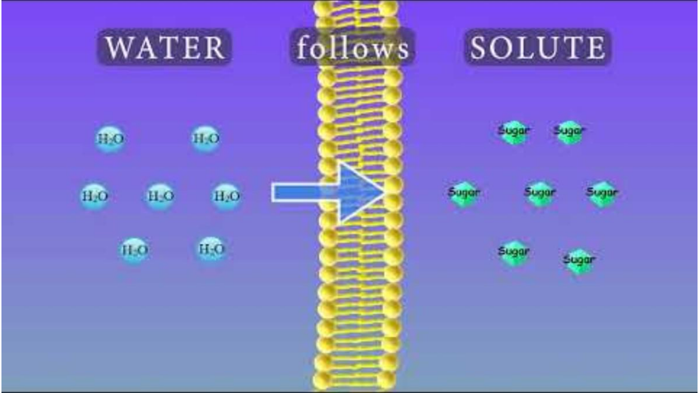
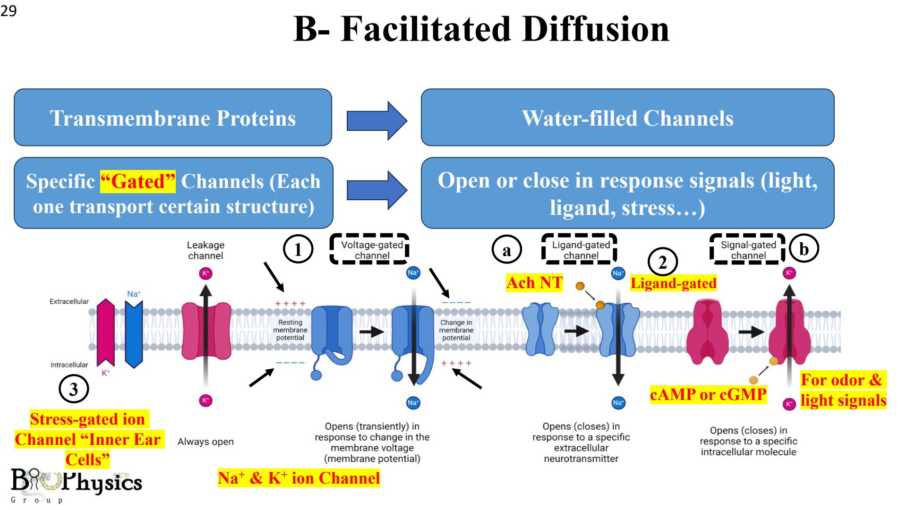
القنوات المائية الأيونية معظمها يفتح ويغلق بإشارات محددة:
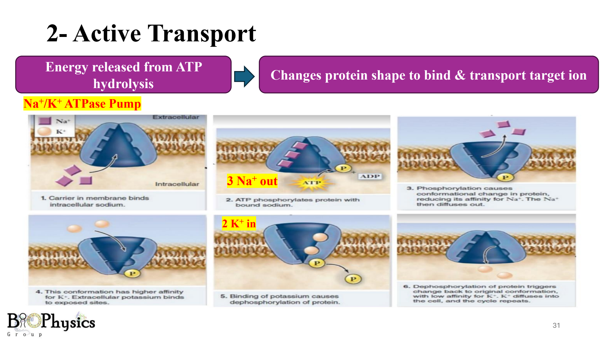
مضخة الصوديوم والبوتاسيوم (Na⁺/K⁺ ATPase) تستهلك جزيء ATP واحد لتقوم بـ:
طرد 3 أيونات صوديوم للخارج (3 Na⁺ out)
مقابل
إدخال أيوني بوتاسيوم للداخل (2 K⁺ in).
هذا الفارق (طرد 3 شحنات موجبة وإدخال 2 فقط) يحافظ على شحنة سالبة داخل الخلية ويخلق فرق الجهد الكهربي الضروري لانتقال إشارات الألم في أعصاب الأسنان والتأثير المخدر للبنج!
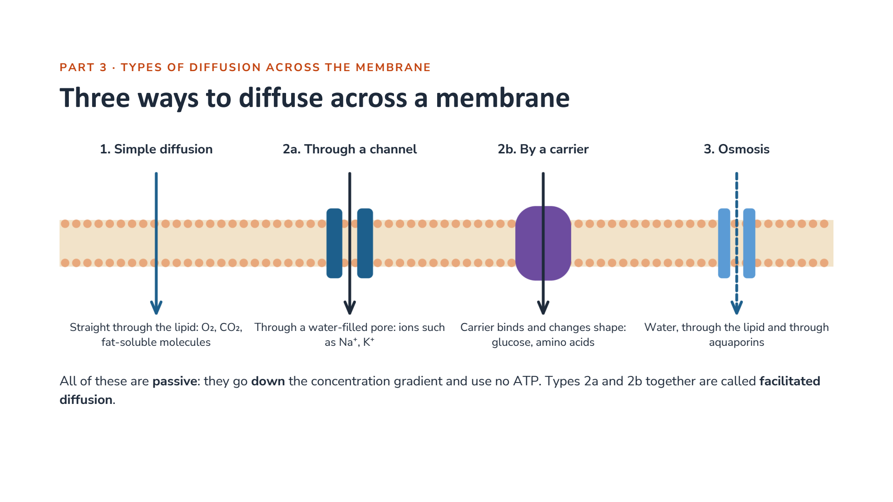
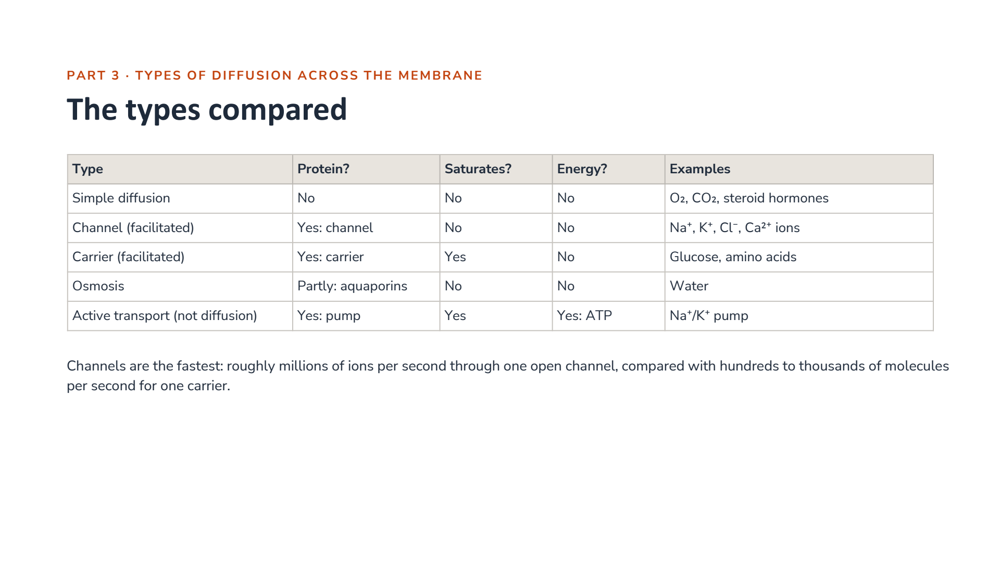
| نوع النقل (Type) | بروتين؟ (Protein?) | يصل للإشباع؟ (Saturates?) | طاقة؟ (Energy?) | أمثلة وتطبيقات (Examples) |
|---|---|---|---|---|
| Simple diffusion | لا (No) | لا (No) | لا (No) | الأكسجين، ثاني أكسيد الكربون (CO₂)، الهرمونات الستيرويدية |
| Channel facilitated | نعم (قناة مائية) | لا (No) | لا (No) | أيونات الصوديوم، البوتاسيوم، الكالسيوم |
| Carrier facilitated | نعم (حامل) | نعم (Yes) | لا (No) | الجلوكوز، الأحماض الأمينية |
| Osmosis | جزئياً (Aquaporins) | لا (No) | لا (No) | الماء (H₂O) |
| Active transport | نعم (مضخة) | نعم (Yes) | نعم (ATP) | مضخة الصوديوم والبوتاسيوم (Na⁺/K⁺) ومضخة الكالسيوم |
⚡ ملاحظة سرعة: القنوات الأيونية (Channels) فائقة السرعة؛ تنقل ملايين الأيونات في الثانية الواحدة، بينما الحوامل (Carriers) أبطأ بكثير (مئات إلى آلاف الجزيئات في الثانية) لأنها تغير شكلها الفراغي في كل نقلة.
في السوائل وداخل السيتوبلازم، لا تسير الجزيئات في خط مستقيم، بل تصطدم بمليارات الجزيئات المجاورة لها في كل ثانية وفي كل اتجاه دون توقف. هذه الحركة المتعرجة تسمى فيزيائياً الحركة العشوائية (The Random Walk) .
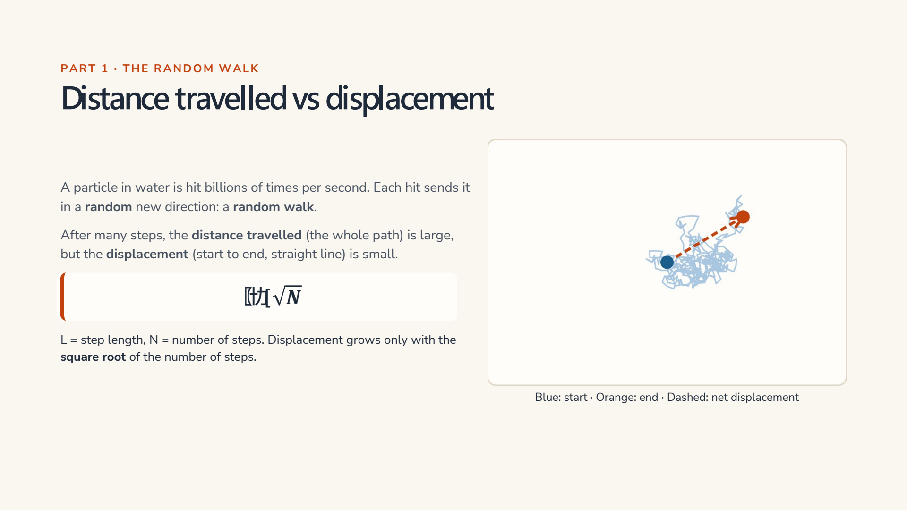
لو تخيلت شخصاً يمشي خطوة للأمام وخطوة للخلف ولليمين ولليسار عشوائياً، فبعد آلاف الخطوات سيجد نفسه لا يزال قريباً جداً من مكانه الذي بدأ منه!
الخلاصة الفيزيائية: الجزيء يتجول مسافة أطول بآلاف المرات من مكانه الفعلي، ولهذا السبب:
• الانتشار فائق السرعة وممتاز في المسافات المجهرية المتناهية في الصغر (داخل الخلية).
• الانتشار بطيء جداً وفاشل تماماً في نقل المواد لمسافات سنتيمترات أو عبر أعضاء الجسم الكبيرة.
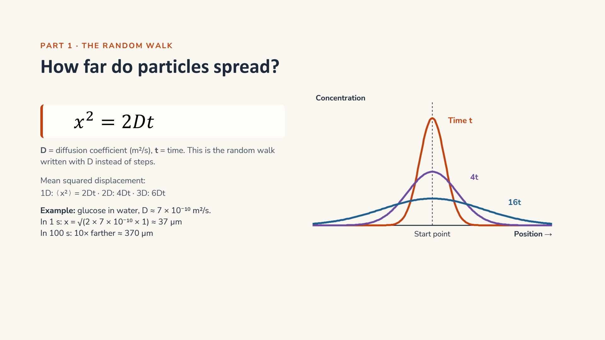
الزمن الذي تحتاجه الجزيئات لتصل بالانتشار لا يزيد تدريجياً، بل يتضاعف بشكل هائل مع مربع المسافة!
• لو زادت المسافة مرتين (الضعف) ← يحتاج الأكسجين أو الدواء إلى 4 أضعاف الوقت ليصل!
• لو زادت المسافة 3 مرات ← يحتاج إلى 9 أضعاف الوقت!
• لو زادت المسافة 10 مرات ← يحتاج إلى 100 ضعف الوقت!
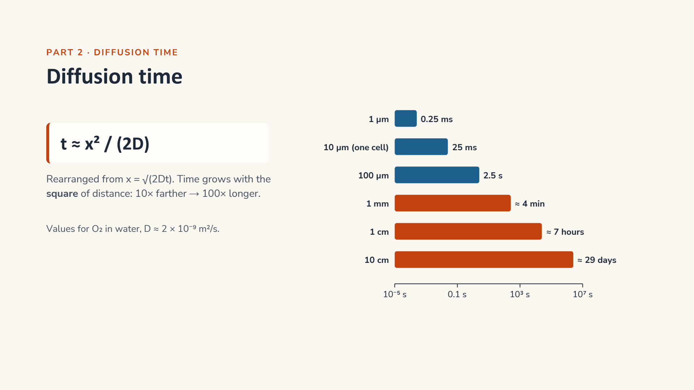
• في اللثة الطبيعية السليمة: تكون الشعيرات الدموية قريبة جداً من خلايا اللثة، فيصل الأكسجين والغذاء في لحظة وتعيش الخلية بصحة.
• بعد خلع الأسنان أو جراحة الفم أو التهاب اللثة: يحدث تجمع للسوائل وتورم نسيجي (Edema / Swelling)، فتتباعد الخلايا عن الشعيرات الدموية وتتضاعف المسافة بينهما.
• وبسبب قاعدة "مربع المسافة": مضاعفة المسافة مرتين تجعل وصول الأكسجين والمغذيات أبطأ 4 مرات، مما يحرم الأنسجة من التغذية ويبطئ التئام الجروح!
• التطبيق العملي: وضع كمادات باردة وإعطاء أدوية مضادة للالتهاب يقلل التورم فوراً ويحافظ على قصر مسافة الانتشار، مما يسرع التئام أنسجة اللثة وعظام الفك!
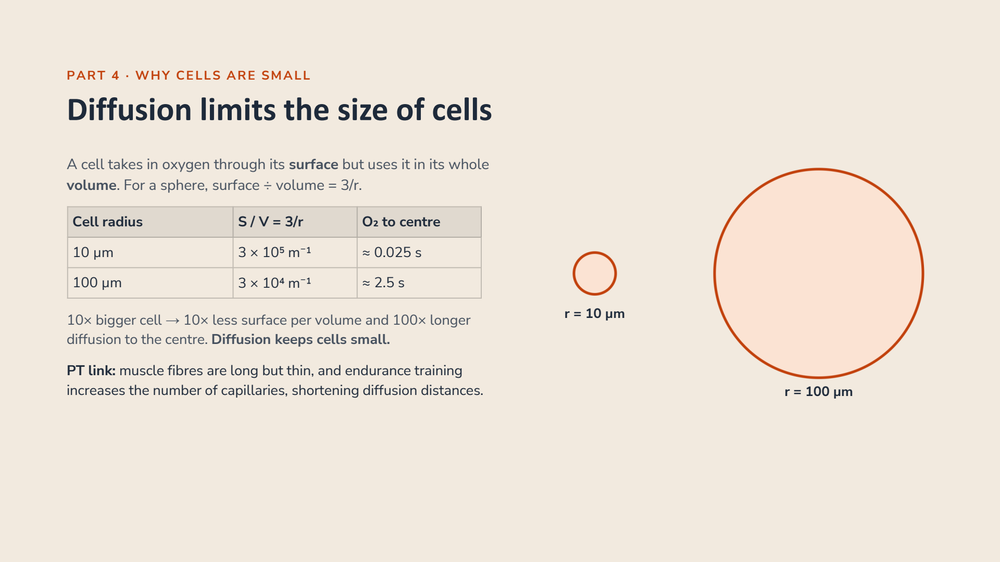
الخلية تمتص الأكسجين والغذاء عبر سطحها الخارجي، لكنها تستهلك هذا الغذاء في كامل كتلتها الداخلية. لو زاد حجم الخلية وأصبحت كبيرة، سيبتعد قلب الخلية ومركزها عن السطح، وبالتالي سيستغرق الأكسجين مئات المرات من الوقت ليصل لقلب الخلية بالانتشار وستموت الخلية اختناقاً من الداخل! لهذا السبب تجبر الفيزياء الحيوية خلايا جسمنا على أن تظل دائماً مجهرية وصغيرة الحجم.
تتحكم الخلية في المواد التي تعبر إليها عبر خاصية تسمى النفاذية (Permeability) . ما الذي يحدد هل ستعبر مادة معينة الغشاء بسرعة وسهولة أم لا؟
التدفق (Flux): هو كمية وعدد الجزيئات التي تعبر مساحة معينة من الغشاء في الثانية الواحدة.
يوضح قانون فيك (Fick's Law) أن تدفق الجزيئات ودخولها للخلية يزيد بشكل طبيعي كلما:
• زاد فارق التركيز: كلما كان تركيز المادة بالخارج أعلى بكثير من الداخل، اندفعت الجزيئات بقوة أكبر.
• زادت نفاذية الغشاء: كلما كانت المادة ذائبة بالدهون أو كانت القنوات مفتوحة.
• اتسعت مساحة السطح: كلما كان سطح الخلية أكبر، استقبلت جزيئات أكثر في نفس اللحظة.
رغم أن حجم الخلية متناهٍ في الصغر، إلا أن سرعة حركة الجزيئات وفارق التركيز عبر غشائها يجعلان مليارات الجزيئات تعبر الغشاء الخلوي في كل ثانية واحدة لتلبي احتياجات التمثيل الغذائي والتنفس!
أهم 10 قواعد ومفاهيم بيوفيزيائية يركز عليها أساتذة المادة في أسئلة الامتحانات:
اضغط على زر الصوت بجانب أي مصطلح للاستماع إلى النطق الإنجليزي الواضح بصوت Jenny:
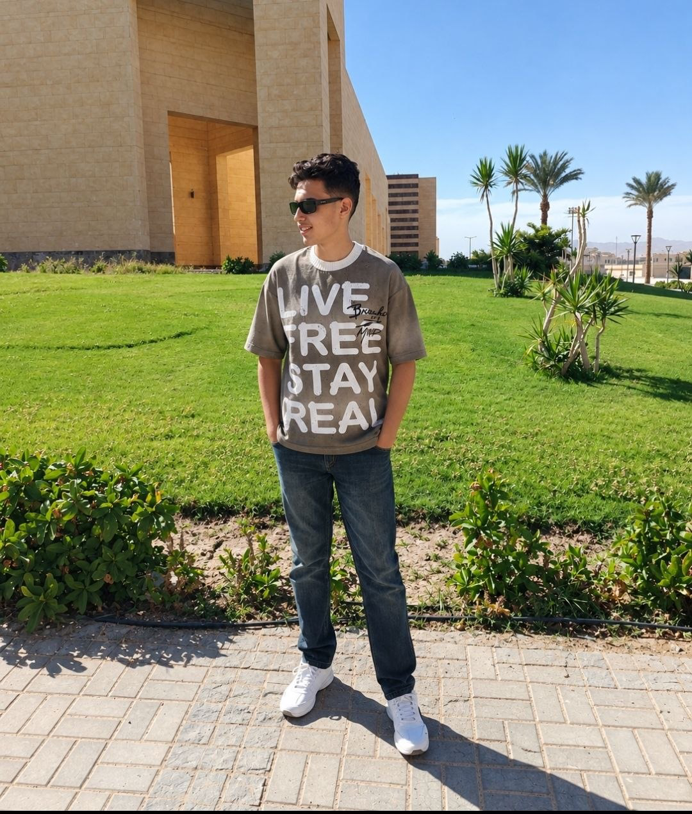